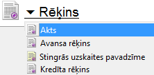

Izejošais rēķins¶
Norēķinu uzskaitei par uzņēmuma pircējiem un piegādātājiem, kā arī preču uzskaitei noliktavās tiek izmantoti iepirkuma un pārdošanas dokumenti.
Pārdošanas dokumenti ir pieejami no izvēlnes >Dokumenti > Norēķini > Pārdošanas dokumenti
Jaunapārdošanas dokumenta pievienošana Izmantojot Pārdošanas dokumentus, tiek realizēts preces, krājumi vai pakalpojumi uzņēmuma pircējiem. Iespējams izmantot dažādus pārdošanas dokumentu veidus, kurus iespējams definēt Norēķinu Sarakstos:Pārdošanas dokumentu veidi .
Lai pievienotu jaunu pārdošanas dokumentu, atrodoties zem moduļa “Norēķini”, sadaļas “Dokumenti”, jāizvēlas pārdošanas dokumentu žurnāls un komanda

vai arī jāizvēlas Norēķini->Jauns->Pārdošanas dokuments un tiks atvērts jauns pārdošanas dokuments:

Pārdošanasdokumenta virsraksta aizpildīšana¶
Lai aizpildītuPārdošanas dokumenta Virsrakstu, nepieciešams:
1. Izvēlēties iepirkuma dokumenta veidu, nospiežot uz dokumenta veida nosaukumu:
{kind=link}
Pārdošanasdokumenta veidi ir definējami Sarakstā: Pārdošanas dokumentu veidi
2. Nepieciešams aizpildīt pārējos laukus Pārdošanas dokumenta virsrakstā:

Numurs: lauks tiek aizpildīts automātiski un paredzēts uzņēmuma iekšējai uzskaitei. Numuri programmā tiek automātiski veidoti pēc kārtas;
Datums: nepieciešams norādīt pārdošanas dokumenta izrakstīšanas datumu;
Nolikt.: nepieciešams norādīt noliktavu, no kuras pakalpojums/preces tiek izrakstīta;

Ja uzņēmums uzskaitaizejošās preces, krājumus, inventāru pa noliktavām, tad programmā jāizveido tik Noliktavas cik nepieciešams. Noliktava jānorāda pārdošanas dokumentu aizpildīšanā, pat, ja operācija nav saistīta ar preču kustību noliktavās.
Dokuments: izvēloties dokumenta veidu “Pavadzīme”, nepieciešams aizpildīt šos laukus, izvēloties sēriju un numuru sarakstā, kas ievadīti Stingrās uzskaites dokumentu žurnālā.
Pircējs: nepieciešams izvēlēties partneri no saraksta.
Ja pircējs nav datu bāzē, izmantojot komandu .. image:: images_ozols/24743.png
- scale
100%
atveras partneru saraksta logs un ir iespējams pievienot jaunu pircēju partneru sarakstā. Lai pievienotu jaunu Partneri , jāizmanto komanda
no rīku joslas un atveras jauna partnera ievades kartiņa. Apmaksas veids: iespēja norādīt pārdošanas dokumenta apmaksas termiņu. Šo termiņu iespējams piesaistīt konkrētam partnerim, definējot to Partnera aprakstā, sadaļā “Pārējie dati”; Termiņš: lauks tiek aprēķināts automātiski, ja aizpildīts lauks - apmaksas veids.
Paskaidrojums: brīvi definējams lauks. Paskaidrojumu iespējams ievadīt ar roku vai izvēlēties jau iepriekš sagatavotu paskaidrojuma tekstu.
Lai pievienotu jaunu Paskaidrojuma tekstu , jāizmanto komanda
{kind=link}
un pievienot.
Pārdošanasdokumenta satura aizpildīšana¶
Lai aizpildītu Pārdošanas dokumenta Saturu, dokumenta satura daļā nepieciešams izmantot komandu
un tiks atvērts pārdošanas satura logs:

Aizpildot satura laukus, vispirms nepieciešams norādīt iepirkuma veidu: krājums, pakalpojums, pamatlīdzeklis vai prece:

Tālāk nepieciešams norādīt preces nosaukumu, uzņēmumā izmantotās dimensijas un norādīt satura ieraksta daudzumu,summu un nodokli. Lai saglabātu satura ierakstu, jāizmanto komanda .. image:: images_ozols/24867.png
- scale
100%
vai komanda

lai atceltu satura ieraksta rindu. Dokumenta saturs var sastāvēt no vairākiem satura ierakstiem, kas kopsummā veido dokumenta Virsrakstā norādīto summu. Lai pievienotu nākamo satura ierakstu, jāizmanto komanda
.
Sagatavotās pavadzīmes apakšējā daļā iespējams izvēlēties valūtu, pavadzīmes izsniedzēju un saņēmēju:
{kind=link}
Valūta: iespēja izvēlēties saņemtā iepirkuma dokumenta valūtu.Ja valūta ir LVL, tad blakus esošais lauks “Kurss” būs tukšs. Ievadot kādu no citām valūtām, piemēram, EUR, blakus laukā “Kurss” automātiski parādīsies Latvijas Bankas kurss uz rēķina saņemšanas datumu.
Ja valūtas kurss dienas sākumā nav ievadīts, tad parādīsies lodziņš kur tiks piedāvāts ielādēt Latvijas bankas valūtas kursus uz rēķina saņemšanas dienu. Lai ielādētu Bankas kursus ir jāizvēlas komanda .. image:: images_ozols/24902.png
- scale
100%
. Nospiežot pogu

tiks ielādēti visi Latvijas Banka kursi tām valūtām, kuras ir definētas programmā. Iepirkuma dokumentā parādīsies attiecīgajai dokumenta valūtai atbilstošais kurss.
Izsniedza: Atbildīgā persona no Partneru saraksta.
Pārdošanas dokumenta grāmatošana¶
Pārdošanasdokumentu iespējams grāmatot no atvērtaPārdošanas dokumenta vai izvēloties (iezīmējot) dokumentuPārdošanas dokumentu žurnālā. Lai iegrāmatotuPārdošanas dokumentu, nepieciešams vispirms apstiprināt dokumentu, izmantojot komandu

no rīku joslas. Apstiprinātu dokumentu ir iespējams grāmatot, izmantojot komandu

. Dokumentu grāmatošanu skatīt Dokumentu grāmatošanas principi .
Pievienotāpārdošanas dokumenta labošana¶
Labojumus saglabātajāPārdošanas dokumentā iespējams veikt atverot Pārdošanas dokumentu, kurš vienlaicīgi pieejams apskatei/labošanaipārdošanas dokumentu žurnālā. Lai veiktu labojumus Pārdošanas dokumentā, šo dokumentu nepieciešams atvērt, izmantojot komandu

no rīku joslas un atvērtajā ierakstā iespējams veikt nepieciešamos labojumus. Pēc labojumu veikšanas, veiktās izmaiņas iespējams .. image:: images_ozols/24867.png
- scale
100%
vai
.